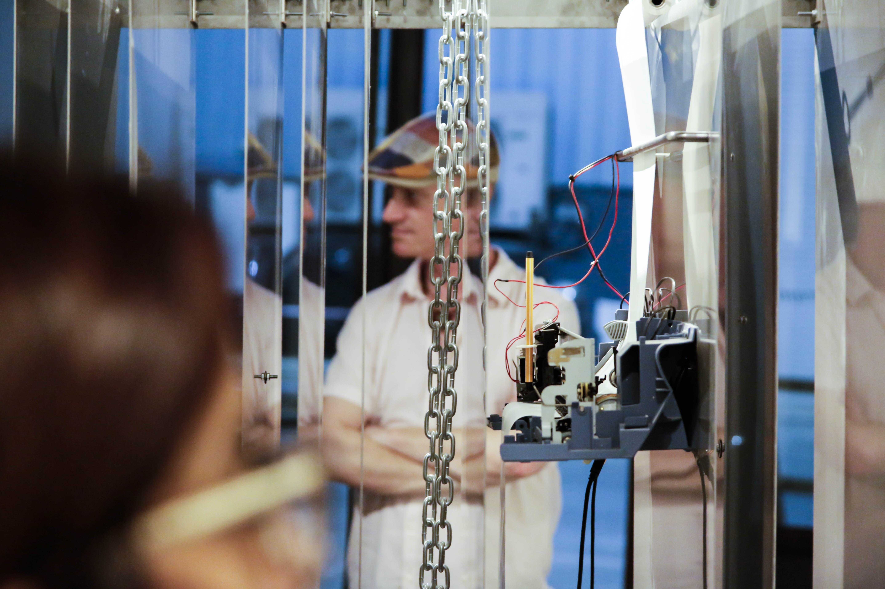
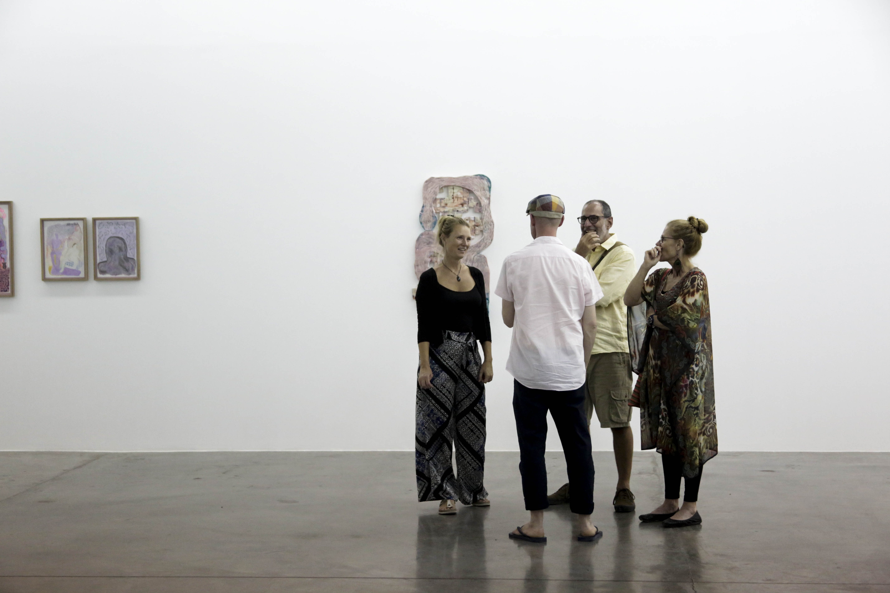
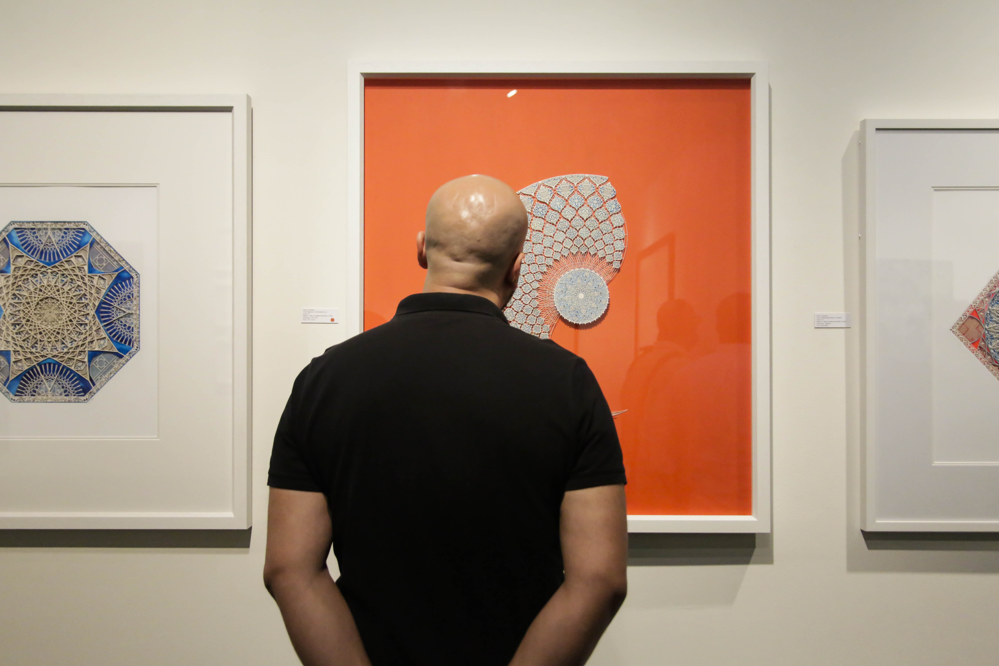
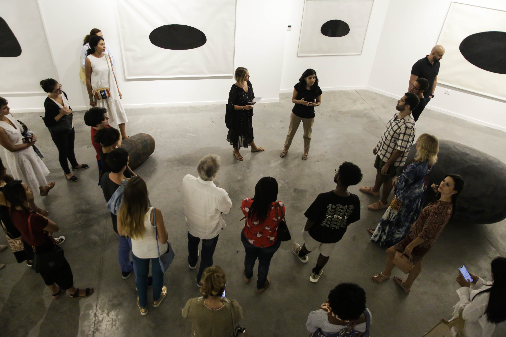

This tour encourages you to break the habit of reading press releases / wall texts / reviews / talking to people before looking at works of art, which can mean you lose the immediacy that you should be getting from your physical relationship with a work of art.
Visiting 5 solo shows and 2 group shows, materials from these exhibitions range from plastic bottles and wool to lentils and found magazines, to screenprints, steel armature and cement, clay and resin reliefs to walnut wood and bone black pigment with a crackling data machine in the middle.
By starting with the art itself we are harking back to the idea of ‘Art for Art’s Sake’ which was central to the 19th century Aesthetics movement who valued the autonomy of art and the pursuit of pure beauty without any other preoccupations.
So lets remove any definitions of time and place, nationality, experiences, age, gender – and allow the work to speak for itself.
Section 1: A return to traditional materials
- Nargess Hashemi, I will build a tall city interconnected by cul-de-sacs at Gallery Isabelle van den Eynde (IVDE)
As soon as you enter the gallery space you are faced with a textile piece right in front of you.
The artist uses a knotting technique of macramé, which she learnt as a child. She tells us: it ‘rejects the standard guidance of a pattern and instead allows the shape of the work to develop organically, resulting in unfettered, irregular and amoeba-like forms.’
Working with textiles is traditionally a feminine activity; the artist works with members of her family to produce them, a collective, community artwork which brings to mind habits, ritual, nostalgia, routines, rhythms. Plastic bottles mould and fill the crocheted works. These pieces are called Breathing houses and the further you go into the gallery they break down to simply being pieces of wool covering the floor.
Paired with precise works on paper, some not even hung on the wall, presenting seemingly abstract patterns, made with marker pens or gouache they also unravel to square of doodles.
When you discover that the paper works are titled Satellite views from various heights, 100m, 500m, 5km and you study the colour texture and space system, it is clear that the artist has taken her practice one further into the sphere of architectural urban planning and suddenly each marking takes on a greater significance.
- Kourosh Golnari, Reticence at 1x1 Art Gallery
The gallery is full of sculptures in different materials depicting abstracted female faces. Steel, bronze, ceramic, glass, coins and pulses are used as materials, the works exploring the ways using different materials can impact the overall impression of the work. For example, using steel to document the heroic lives of heroines such as Gordafarid as recounted in the Shahnameh is appropriate. A traditional Persian carpet is hung on the wall with a traditional sword framing a ceramic face. A piece titled Everyday creates the heads out of domestic, edible products. Faces are either smaller or larger than lifesize.
A celebration of all that women have achieved, this is the male artist’s first exhibition outside his native Iran.
Section 2: Shock of The New

- Ali Tnani, Unknown Program at Elmarsa Gallery
How do you decide if something is a piece of art? Does it need to be divorced from any function other than the purely aesthetic? This show brings into question such issues.
The first piece is a mess to look at – seemingly random steel sheets hang from the ceiling by a metal chain, various bits of mechanical equipment lie on the floor with a roll of paper cascading, with nothing legible on it. It is a Crackling data machine, produced in collaboration with sound artist and composer Lukas Truniger. As Tnani is trained as a computer programmer it was natural for him to use such objects to make his point: that we can never fully read the Internet.
Other works are not what they seem - drawings have been produced by moving a vacuum across pieces of paper with lead being randomly scattered. Photography gives prominence to initially overlooked, in-between spaces. Seemingly abstract images turn out to be pictures of the tomb of the artist’s father.
Tnani is interested in post-modern concept of Heterotopia developed by Michael Foucault in his publication ‘Of other places” – spaces that are irrelevant, both physical and mental – relationship to utopia / dystopia. The show can be understood as a personal examination of social issues in post-revolutionary Tunisia.
- Grey Noise, Moonshow intervention by Saira Ansari, part of Loser's Club
The gallery has been turned on its head. Turn left and start in what is normally the private offices for the gallery staff but is now displaying a series of texts, emotive letters written by Ansari to the 6 artists in the show: Stephanie Saade, Michael John Whelan, Fahd Burki, Mehreen Murtaza, Caline Aoun and Charbel-joseph H Boutros.
Going back round to what is normally the storeroom, we find a selection of works selected from the inventory of the gallery – works that have been in previous shows but remained unsold.
A beautiful examination of what is known as ‘Conceptual art’ – the pieces all share a fascination with the moon and lunar cycles, ranging from a wooden bedside table with 1 pack of 28 contraceptive pills (Moon Pills by Stephanie Saade) to c-print photographs by Michael John Whelan of starry skies. Often you need to know the medium to get a full understanding of the piece, Saade’s The Sky is a Village for example becomes so much more expressive when you read that the printed photograph has been left outside, so it has a real connection with nature.
Section 3: Finding a middle ground

- Monika Grabuschnigg, What Satisfaction could you possibly have at Carbon 12
Again we are faced with an exhibition made up of works in two mediums - Clay and resin reliefs and mixed-media drawings, all on a relatively small-scale, all sharing a joyful dynamism and vibrant palette. Reliefs are an unusual way of a sculptor to work – you limit your audience to read the piece from one dimension so they can be seen as paintings.
The artist tells us she listens to music and dances while she sculpts, that movement is reflected in the pieces. She tells us: "The works I create are often questions, not answers’ with intriguing titles such as ‘We drink the night with a thirst no lake big enough could ever quench" - there is often a literary connection to these visually rich pieces of art.

- Group show curated by Anna Seaman, The Diving Bell and the Butterfly at Showcase Gallery
It is quite a feat to hang works by 11 artists in one exhibition. They all share a working method of systematic techniques, the artists intentionally restricting themselves in certain ways and yet finding space to display their different creative expressions. The title comes from novel by French journalist Jean-Dominique Bauby who was paralyzed by a stroke and suffered locked-in syndrome, only able to only move his left eyelid, writing a book with the assistance of a translator.
Experiments with calligraphy as an artform abound, from the free style of Wissam Shawkat’s calligraforms on canvas which come close to a cubist aesthetic – to Amal Al Gurg’s more measured, beautiful screenprints on black paper. Ahmed Al Faresi works at Al Ain University in computer science, his seemingly abstracted works are made up of one form repeated, that of the infinity sign. Mariam Abbas’ exquisite drawings depict her vision of the UAE. Ebtisam Abdul Aziz: again coming from a scientific background, produces works based directly on mathematical formula. Works from 2010 pairing text with drawings: ‘the artist should spend less time on imagining success and put all the energy into the creation of art work itself’
Paper is a common material: Nathaniel Alapide uses discarded magazines as his canvas, while Afshan Daneshvar’s evocative Boats series presents individual unique units of folded paper stuck onto a larger roll. Katie Venner-Woodbridge’s ‘100 days’ presents her daily impressions of life from her window, whilst the canvas Home a mesmerizing journey through the artistic process and the question of when a work of art is truly completed.
Pattern is a preoccupation throughout the show, most expertly executed by Julia Ibbini, her laser-cut papers are fixed to a polyester resin and yet seem to be pure cut forms brought to life by the juxtaposition of different colours and shapes. Jessica Watson-Thorp’s monoprints are more than depictions of a mosque; when you examine the technique, a broader array of meaning becomes clear. All monoprints, her method includes printing onto handmade paper but also (which initially began as a mistake as she ran out of paper) – tissue. Different sections of tissue are mounted on canvas and then a glaze is put on the surface. Symbolism of numbers, stars, Arabic histories pour from the works.
Section 4: A happy balance

- Jene Highstein, Space and Place at Jean-Paul Najar Foundation
Again combining works on paper with larger sculptural pieces, this exhibition is an exploration of different materials and how they can effect the overall impression of a work of art. Multiple Distortions from 1975 was made with a large steel armature, wrapped in chicken wire and covered in cement, which could take 12 days to settle. It was produced in collector Jean-Paul Najar’s home in Paris. Seemingly simple, the accompanying works on paper were constructed in a similar way, using Bone Black pigment and graphite. Timeless and mysterious, the works have tremendous presence.
Highstein was working during an era when industrial materials were so exciting, but he went against the grain by using them to make organic forms. Playing with volume, mass, weight and perception, other sculptural forms are less monumental in scale but heavier in weight and ragged from their journey through time. In the 1980s he spent time with wood, cherry, elm, poplar and walnut, not afraid of the imperfections in the surface but a true return to natural materials.
This tour took place on 30 May as part of the Ramadan at Alserkal Avenue programme.
We encourage visitors to recreate this trail and make use of Egerton's notes along the way.